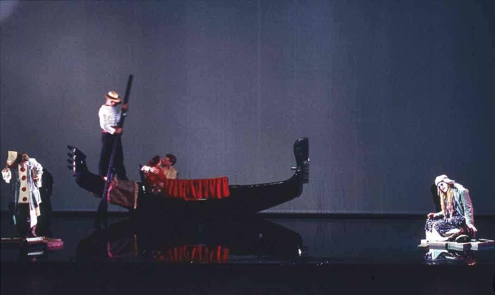
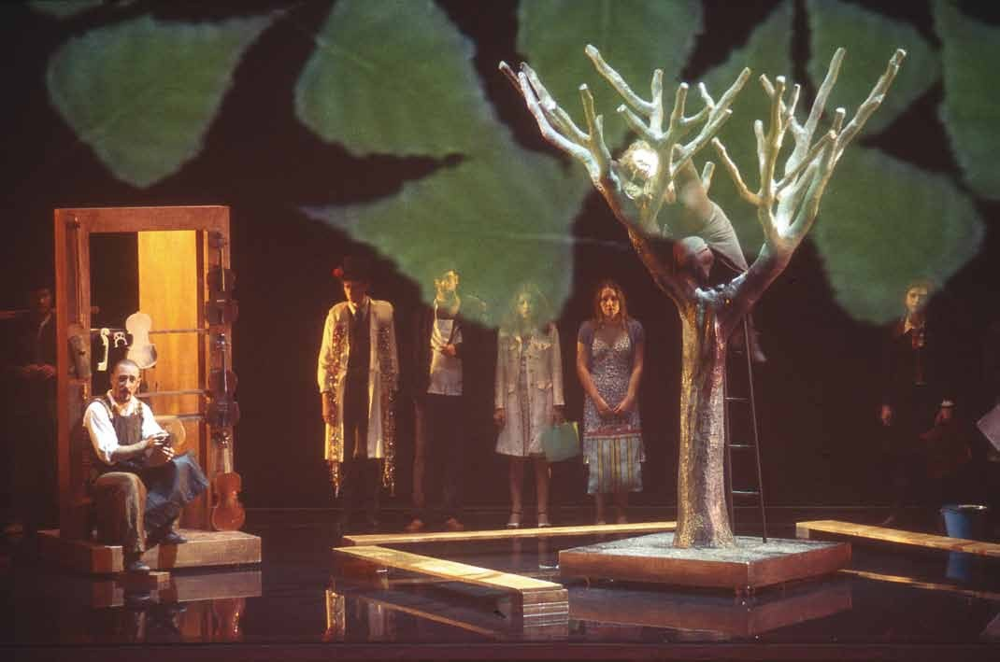
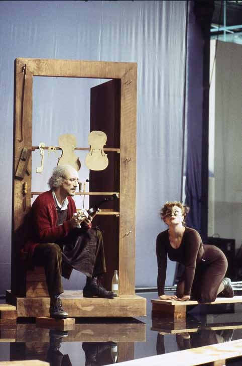
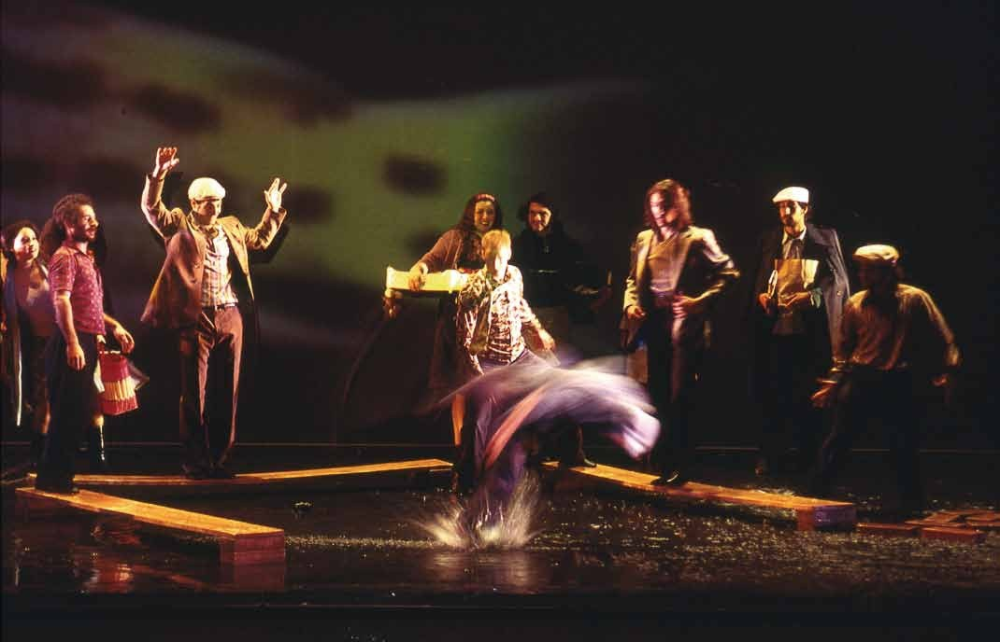
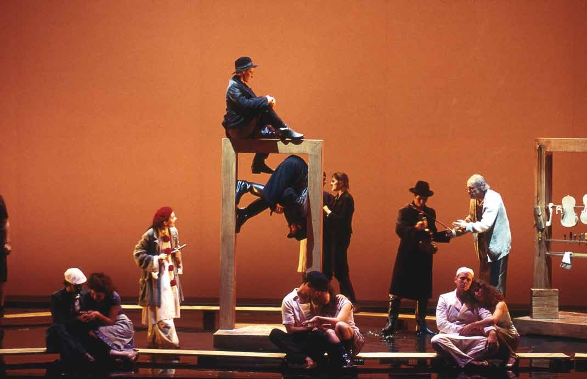
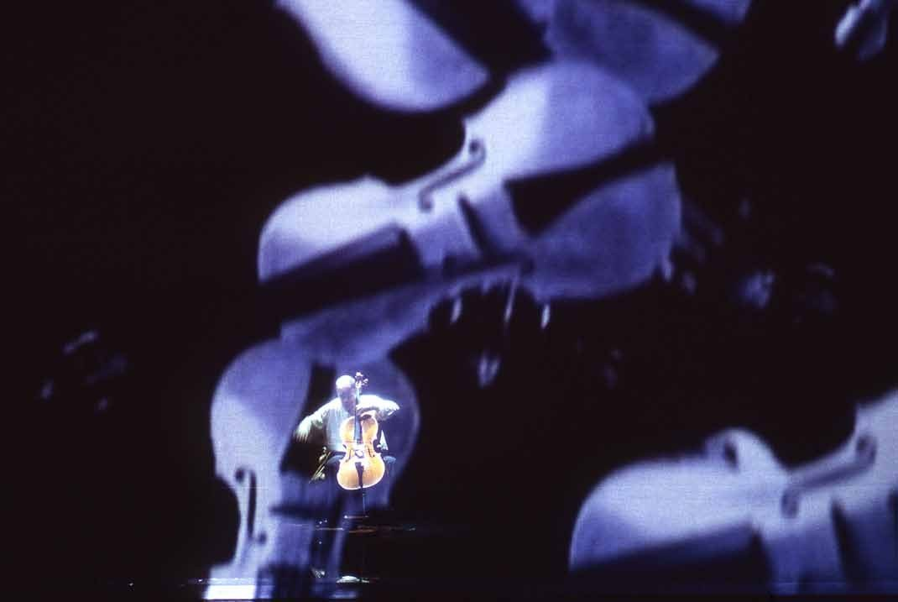
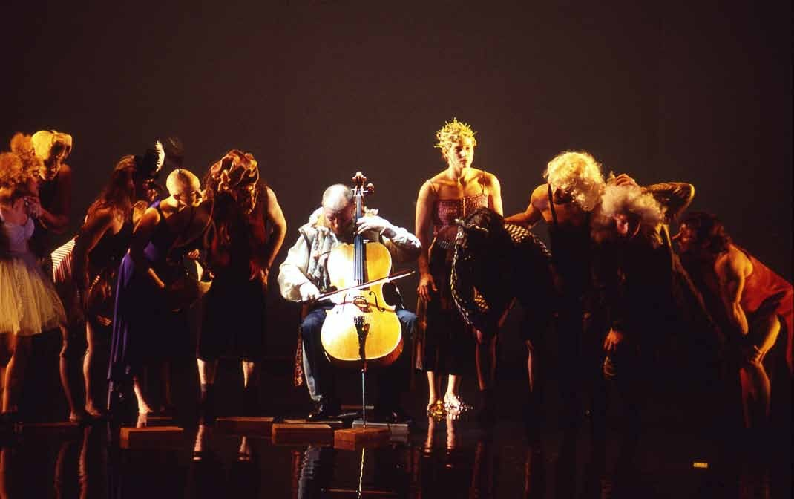
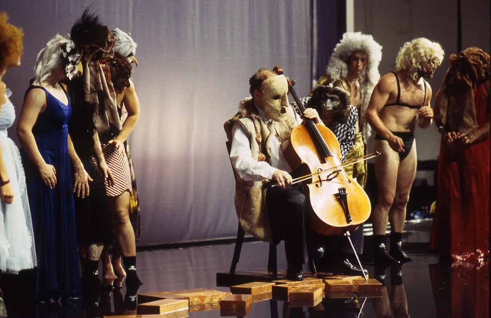
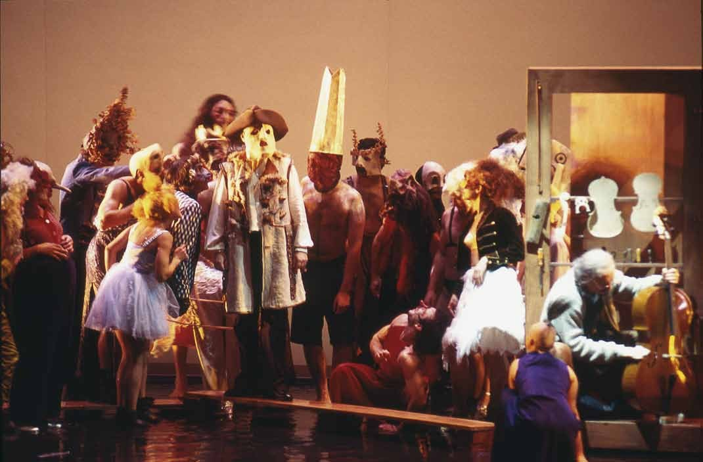

Una Venezia di laguna e di legno. Un Pierrot lunare. Un liutaio che intaglia strumenti come fossero corpi. Un conte musical per famiglie e adulti che non rinuncia al rigore della scrittura contemporanea.
A Venice of lagoon and wood. A lunar Pierrot. A luthier who carves instruments as if they were bodies. A conte musical for families and adults that does not renounce the rigour of contemporary writing.
Une Venise de lagune et de bois. Un Pierrot lunaire. Un luthier qui taille des instruments comme s'ils étaient des corps. Un conte musical pour familles et adultes qui ne renonce pas à la rigueur de l'écriture contemporaine.
Nell'ottobre 2004, al Théâtre du Châtelet di Parigi, va in prima il Le luthier de Venise — quarta opera del compositore italiano Gualtiero Dazzi, su libretto di Claude Clément, tratto dall'omonimo libro illustrato pubblicato dalla stessa Clément una quindicina d'anni prima. Il Châtelet commissiona l'opera con una sfida specifica: comporre una pièce lirica contemporanea capace di parlare contemporaneamente a un pubblico generale e a bambini dagli otto anni in su, senza compromettere il linguaggio musicale.
La regia è di Giorgio Barberio Corsetti; le scene sono firmate da Cristian Taraborrelli. La scenografia sceglie la Venezia simbolica della Commedia dell'Arte e del Pierrot Lunaire: acqua sul palcoscenico, riflessi mobili, una bottega di liutaio come grembo del mondo dove i violini nascono e parlano. La critica francese saluta lo spettacolo come una riconciliazione possibile fra pubblico non specialistico e opera lirica contemporanea.
Per Cristian è il suo secondo lavoro al Châtelet dopo la collaborazione precedente con Corsetti; precede di tre anni l'incontro con il regista francese del teatro storico Pierre Audi e la grande stagione che si aprirà con La Pietra del Paragone 2007 (Premio Abbiati) e La Belle Hélène 2015.
In October 2004, at the Théâtre du Châtelet in Paris, the world premiere of Le luthier de Venise — the fourth opera by Italian composer Gualtiero Dazzi, on a libretto by Claude Clément, drawn from Clément's own illustrated book published some fifteen years earlier. The Châtelet commissioned the opera with a specific challenge: to compose a contemporary lyric piece able to speak at once to a general audience and to children aged eight and up, without compromising the musical language.
Direction by Giorgio Barberio Corsetti; sets by Cristian Taraborrelli. The set design chooses the symbolic Venice of the Commedia dell'Arte and of Pierrot Lunaire: water on the stage, moving reflections, a luthier's workshop as the world's womb where violins are born and speak. French critics greeted the production as a possible reconciliation between non-specialist audiences and contemporary lyric opera.
For Cristian, it is his second work at the Châtelet after a previous collaboration with Corsetti; it precedes by three years the major Parisian season that will open with La Pietra del Paragone 2007 (Premio Abbiati) and La Belle Hélène 2015.
En octobre 2004, au Théâtre du Châtelet de Paris, création mondiale du Luthier de Venise — quatrième opéra du compositeur italien Gualtiero Dazzi, sur un livret de Claude Clément, tiré de son propre livre illustré paru une quinzaine d'années plus tôt. Le Châtelet commande l'œuvre avec un défi spécifique : composer une pièce lyrique contemporaine capable de parler à la fois à un public général et à des enfants à partir de huit ans.
Mise en scène de Giorgio Barberio Corsetti ; scénographie de Cristian Taraborrelli. La scénographie choisit la Venise symbolique de la Commedia dell'Arte et du Pierrot Lunaire : de l'eau sur la scène, des reflets mobiles, l'atelier d'un luthier comme matrice du monde où les violons naissent et parlent. La critique française salue le spectacle comme une réconciliation possible entre le public non spécialisé et l'opéra contemporain.
Il Soggetto
Pierrot — volatile sperduto, «esausto, senza nome, senza volto» — approda una notte sulla riva di Venezia. La Mendiante, conteuse di mestiere, lo accoglie: ha conosciuto un principe crudele che, in un fastoso banchetto, l’ha sfidata in un duello tra parola e musica contro un violoncellista. Se avesse smesso di raccontare, «tutti i poemi del mondo sarebbero stati ingoiati negli abissi». Se il violoncellista avesse smesso di suonare, «il mondo intero sarebbe rimasto privato della musica per sempre». Venezia stava sospesa a loro come ad ali.
Per salvare Venezia dall’oblio, Pierrot comincia a raccontare la storia di un vecchio liutaio il cui giardino è abitato da un albero secolare. Quando l’albero muore, il liutaio fa essiccare il legno per anni e ne ricava il più perfetto violoncello mai uscito dalle sue mani. Al carnevale arriva un giovane violoncellista, virtuoso e mascherato, che pretende di provare lo strumento. Lo strumento resiste. Solo quando il musicista, rimasto solo, si toglie la maschera e suona «senza spirito di conquista, sereno, senza sforzo», l’albero rinasce nelle vibrazioni.
Nel finale, la Mendiante annuncia: «Venise vivra plus qu’une éternité!» Venezia non affonderà, perché ha sempre preso le parti dei poeti e dei musicisti. Pierrot sale su un telo bianco e si solleva nell’aria, i coristi imbandiscono il banchetto, e il Carnevale ricomincia «car la fête n’aura plus de fin».
Pierrot — a stray nocturnal bird, «exhausted, nameless, faceless» — washes up one night on the bank of Venice. The Mendiante, a professional storyteller, takes him in: she has met a cruel prince who, at a sumptuous banquet, challenged her in a duel between word and music against a cellist. If she had stopped telling, «all the poems of the world would have been swallowed by the abyss». If the cellist had stopped playing, «the whole world would have been forever deprived of music». Venice hung from them as from wings.
To save Venice from oblivion, Pierrot begins to tell the story of an old luthier whose garden is inhabited by a centuries-old tree. When the tree dies, the luthier dries the wood for years and crafts from it the most perfect cello his hands have ever made. At Carnival a young cellist arrives, a masked virtuoso, who demands to try the instrument. The instrument resists. Only when the musician, alone, takes off his mask and plays «without conquest, serene, effortless», does the tree come back to life in the vibrations.
In the finale, the Mendiante announces: «Venise vivra plus qu’une éternité!» Venice will not sink, because it has always taken the side of poets and musicians. Pierrot climbs a white cloth and rises into the air; the chorus lays out the banquet, and Carnival begins again, «car la fête n’aura plus de fin».
Pierrot — volatile égaré, «éxténué, sans nom, sans visage» — échoue une nuit sur une rive de Venise. La Mendiante, conteuse de métier, le recueille : elle a connu un prince cruel qui, lors d’un fastueux banquet, l’a défiée en un duel entre mots et musique contre un violoncelliste. Si elle avait cessé de conter, «tous les poèmes du monde auraient été engloutis dans les abysses». Si le violoncelliste s’était arrêté de jouer, «le monde entier aurait été définitivement privé de musique». Venise vivait suspendue à eux comme à des ailes.
Pour sauver Venise de l’oubli, Pierrot commence à conter l’histoire d’un vieux luthier dont le jardin est habité par un arbre séculaire. Quand l’arbre meurt, le luthier laisse sécher le bois pendant des années et en tire le plus parfait violoncelle jamais sorti de ses doigts. Au carnaval arrive un jeune violoncelliste, virtuose masqué, qui prétend essayer l’instrument. L’instrument résiste. Ce n’est que quand le musicien, resté seul, ôte son masque et joue «sans esprit de conquête, serein, sans effort», que l’arbre renaît dans les vibrations.
Dans le final, la Mendiante annonce : «Venise vivra plus qu’une éternité !» Venise ne sombrera pas, car elle a toujours pris le parti des poètes et des musiciens. Pierrot grimpe sur un tissu blanc et s’élève dans les airs ; les choristes dressent le banquet, et le Carnaval reprend «car la fête n’aura plus de fin».
I Personaggi
I Tredici Tableaux
Il conte musical è strutturato in un’Ouverture più tredici quadri narrativi, fra cori della folla veneziana, duetti, monologhi e momenti puramente musicali. La struttura non è quella dell’atto operistico, ma quella della fiaba per immagini.
- Pierrot et la Mendiante
- Les Petites Gens de Venise
- L’Arbre
- Le Chat et le Luthier
- Mort de l’arbre
- Le Temps
- La Vieillesse
- Le Violoncelle
- Le Travail du Luthier
- Carnaval
- Le Violoncelliste
- La Solitude
- Finale
The conte musical is structured in an Overture plus thirteen narrative tableaux, weaving Venetian-crowd choruses, duets, monologues and purely musical interludes. The structure is not that of operatic acts, but of an image-fairy-tale.
- Pierrot et la Mendiante
- Les Petites Gens de Venise
- L’Arbre
- Le Chat et le Luthier
- Mort de l’arbre
- Le Temps
- La Vieillesse
- Le Violoncelle
- Le Travail du Luthier
- Carnaval
- Le Violoncelliste
- La Solitude
- Finale
Le conte musical est structuré en une Ouverture plus treize tableaux narratifs, tissant chœurs de la foule vénitienne, duos, monologues et moments purement musicaux. La structure n’est pas celle de l’acte opératique, mais celle du conte par tableaux.
- Pierrot et la Mendiante
- Les Petites Gens de Venise
- L’Arbre
- Le Chat et le Luthier
- Mort de l’arbre
- Le Temps
- La Vieillesse
- Le Violoncelle
- Le Travail du Luthier
- Carnaval
- Le Violoncelliste
- La Solitude
- Finale
Apparato Critico
«Cesse de te moquer, cloue le caquet à ta vaine jalousie… Mon arbre vivait là quelques siècles plus tôt, et vivra longtemps, très longtemps après nous…»
Le Luthier al Gatto, tableau 4
«Présomptueux imbécile ! Artiste vide et creux, technicien trop habile… Virtuose futile ! Éloigne tes doigts sans âme de mon œuvre accomplie dans le silence, la solitude et la sincérité.»
Il Liutaio al Violoncellista, tableau 11
«Détache-toi des vanités, la musique voit le jour… dans l’élan le plus humble.»
Voce d’alto, tableau 12 «La Solitude»
«Venise vivra plus qu’une éternité ! … Elle a toujours pris le parti des poètes et des musiciens. Rien n’y changera rien !»
La Mendiante, Finale · libretto integrale: gualtierodazzi.org · Edizioni Transatlantiques Paris / Chester Music Ltd London
Foto di Scena — Châtelet 2004 · gualtierodazzi.org










Tags